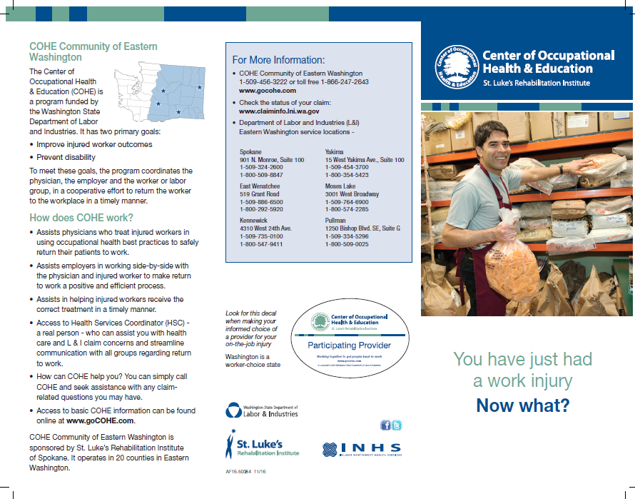
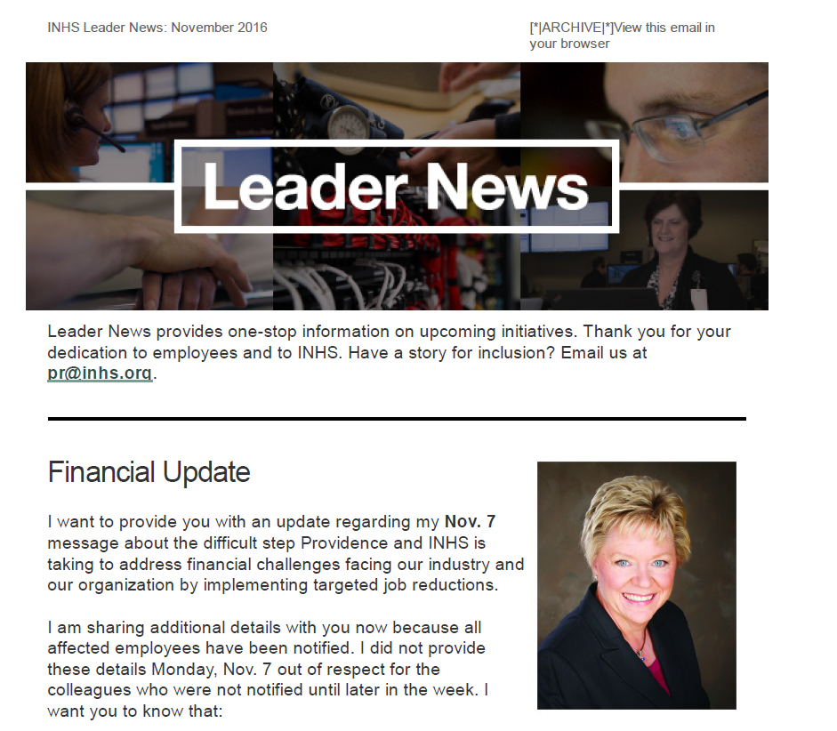
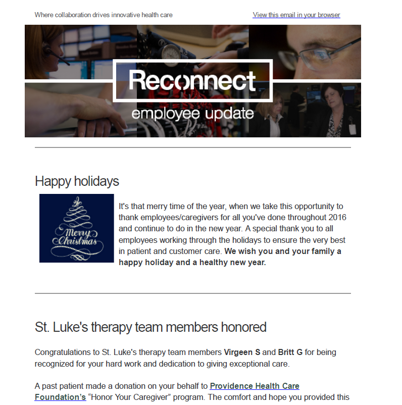
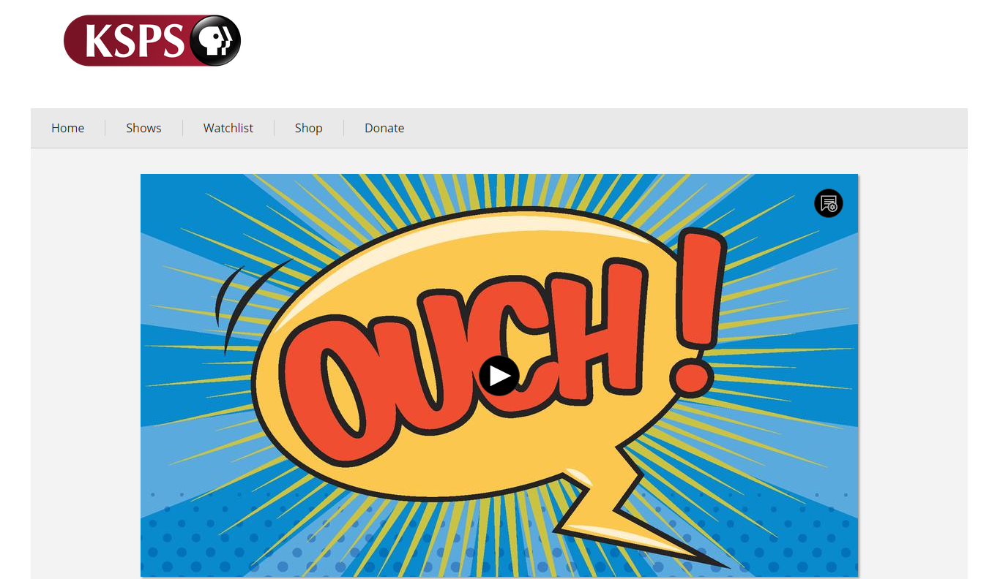
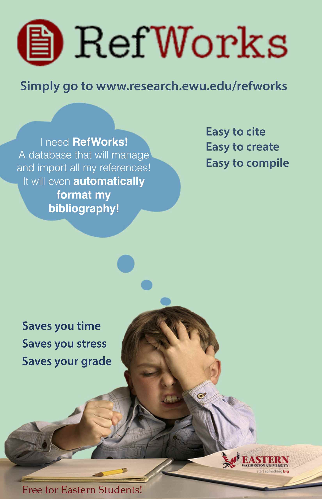
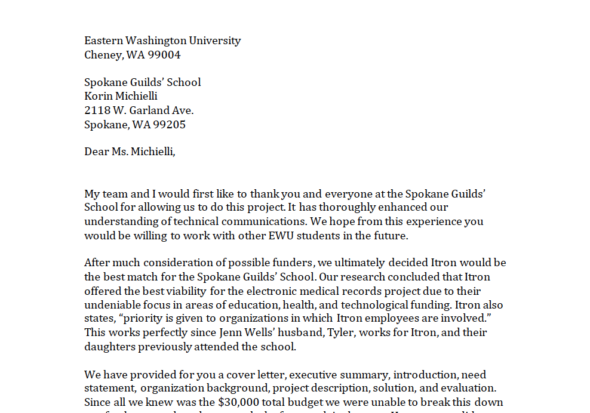
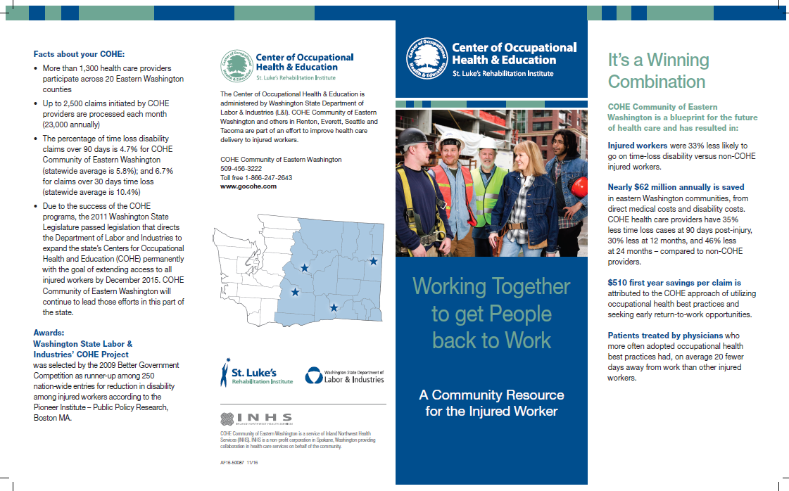

For this brochure, I was in charge of copy editing and basic coordinating. I was given proofed copy, and at each iteration of design, I edited the deliverable. I made notes on the PDFs using Adobe Pro and would coordinate with the designer and the director of communication until we reached a final deliverable that was well designed and free of errors.
In November of 2016 St. Luke’s Rehabilitation Center hired a new doctor, Dr. Daher. It was my responsibility to interview Dr. Daher, get a headshot, and prepare a press release for immediate release. I worked closely with the director of communication, who edited my writing before approval.

One of my responsibilities as an intern in the communications department was to maintain a monthly newsletter for the leadership at INHS. Articles for this newsletter would come to me throughout the month from the director of communication, and it was my responsibility to find pictures for the articles and format them into a newsletter.

One of my responsibilities as an intern in the communications department was to maintain a weekly newsletter for the employees at INHS. Articles for this newsletter would come to me throughout the month from the various employees, and it was my responsibility to find pictures for the articles and format them into a newsletter.
During my internship at Inland Northwest Health Services I helped secure earned media exposure on local television networks to increase exposure and awarness about our facilities. This was part of an ongoing effort to produce positive media exposure for the hospitals under the INHS umbrella.

Dr. Valley at Arthritis Northwest reached out to me looking for ways in which he could increase exposure for his naturopathic medical practice. Using what I had learned in my public relations classes, and while interning at INHS, I secured Dr. Valley a feature on KSPS: Health Matters.
In order to communicate the changes in the 2017 INHS employee health benefits, several communication materials were produced. A brochure was sent to all employees that laid out the anticipated changes. It was my responsibility to copy edit the materials and coordinate its production.

EWU Libraries wanted to promote a helpful tool for creating bibliographies, Refworks. Refworks was a useful tool that could save students a lot of time and stress but not many students knew about it. The audience for this project was EWU students. We formed groups in TCOM 205 and each group produced a deliverable to help spread the word about Refworks.

In Spring of 2016 during our Proposal Writing class, our service learning project was to partner with a local 501(c) in order to assist with proposal writing. We were split into groups of three and needed to work together, identify a community partner, produce a need statement, a grant proposal, and apply for a grant with our community partner.

For this brochure, I was in charge of copy editing and basic coordinating. I was given proofed copy, and at each iteration of design, I copy edited the deliverable. I made notes on the PDFs using Adobe Pro, and would coordinate with the designer, and the director of communication, until we reached a final deliverable that was well designed and free of errors.


{kind=link}